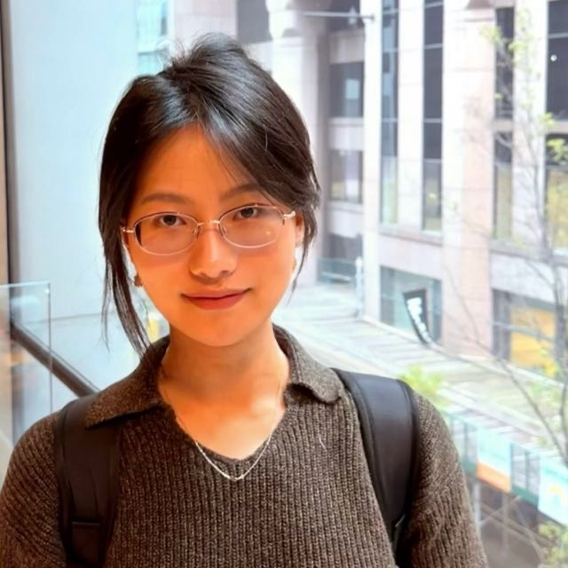

Lab
Current Members
Postdoctoral Fellow
Ph.D. Students
|
||||
|
 |
INGEN4DS Fellow / Research Assistant
|
Research Assistants
|
|||||
|
|||||
|
Alumni
Dr. Krishnendu Chandra — Postdoctoral researcher in the lab from 2025–2026, working on statistical and deep learning methods for neuroimaging and Alzheimer's disease. He is now a Lecturer at Texas A&M University.
Theyanesh Jayaprakash — Graduate research assistant from 2024–2026, working on deep learning methods for tau-PET heterogeneity and Alzheimer's disease subtyping. He received the 2025 AAIC Conference Fellowship Award and is now an AI Engineer at Plutus. Publications: Jayaprakash et al. (2025) Alzheimer's & Dementia 21: e109949 (Abstract) (first author) · Powla et al. (2025) Alzheimer's & Dementia 21: e100019 (Abstract) · Cornelison et al. (2025) Alzheimer's & Dementia 21: e103077 (Abstract) Software: Contributed code to the ABCModel package.
Connor Cornelison — Graduate research assistant from 2024–2026, studying imaging and molecular biomarkers of Alzheimer's disease. He received the INGEN4DS Fellowship and is now a software developer supporting high-performance computing at Indiana University. Publications: Cornelison et al. (2025) Alzheimer's & Dementia 21: e103077 (Abstract) (first author) · Jayaprakash et al. (2025) Alzheimer's & Dementia 21: e109949 (Abstract) Software: Built and maintained the ABCModel package — tutorial, code updates, and simulated example data.
Huairui Wang — Graduate research assistant from 2025–2026, working on statistical network modeling and high-dimensional brain connectivity analysis. He is now pursuing his Ph.D. at Michigan State University.
Yumeng Chen — Graduate research assistant from 2025–2026, working on brain connectivity modeling and computational neuroimaging. She is now pursuing her Ph.D. in Biomedical Engineering at Case Western Reserve University.
Gertrude Osei — Graduate research assistant from 2025–2026, studying psychometric evaluation of cognitive measures in Alzheimer's disease. She is now pursuing her Ph.D. in Educational Measurement at James Madison University.
Anastasija Naumoski — DataWiz intern with the lab in Summer 2025, with interests in bioinformatics, computational biology, and precision medicine.
Plamena Powla — Worked with the lab from 2024–2025 on Alzheimer's disease research involving tau pathology and functional brain networks. She published a first-author abstract with the team. Publications: Powla et al. (2025) Alzheimer's & Dementia 21: e100019 (Abstract) (first author) · Cornelison et al. (2025) Alzheimer's & Dementia 21: e103077 (Abstract) · Jayaprakash et al. (2025) Alzheimer's & Dementia 21: e109949 (Abstract)
Yunhe Liu — Graduate research assistant at Yale from 2023–2024 and co-author of a manuscript with the lab. Yunhe went on to pursue a Ph.D. in Statistics at Texas A&M University. Publications: Wang et al. (2026) Nature Methods 23(1): 225–235
Yiting Wang — Graduate research assistant at Yale from 2023–2025 and co-author of two manuscripts with the lab. Yiting went on to pursue a Ph.D. in Statistics at the University of Virginia. Publications: Wang, S. et al. (2025) Medical Image Analysis 99: 103309 · Wang, S. et al. (2024) Alzheimer's & Dementia 20(12): 8387–8401
Xinzhi Zhang — Graduate research assistant at Yale from 2023–2025 who published first- and co-authored work with the lab. She went on to pursue a Ph.D. in Biostatistics at New York University. Publications: Zhang et al. (2025) Human Brain Mapping 46(9): e70260 (first author) · Wang et al. (2026) Nature Methods 23(1): 225–235 Software: Contributed example files and tutorial content to the LatentSNA package.